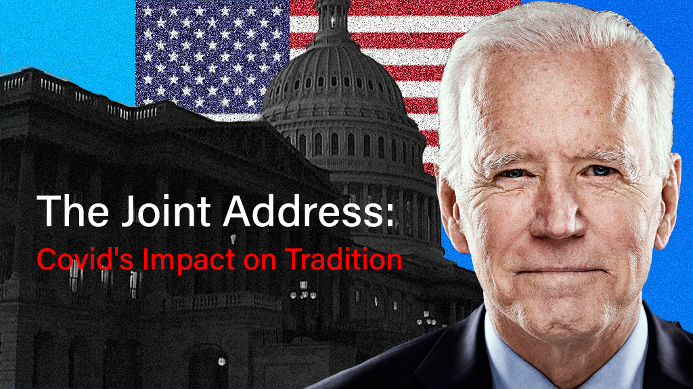
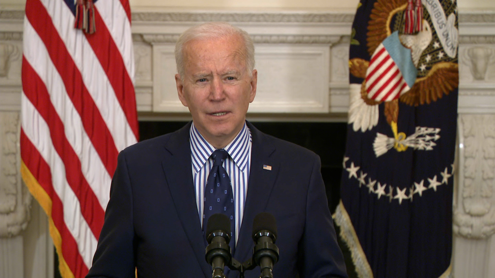
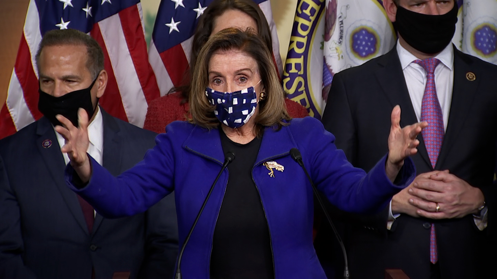
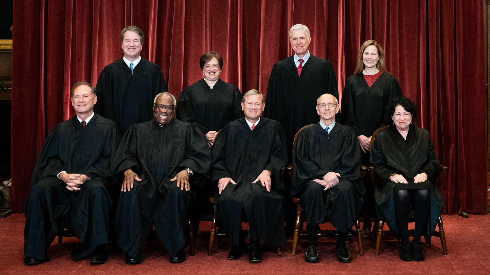
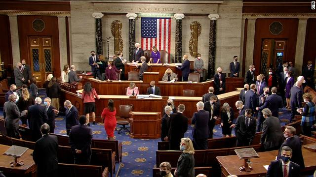
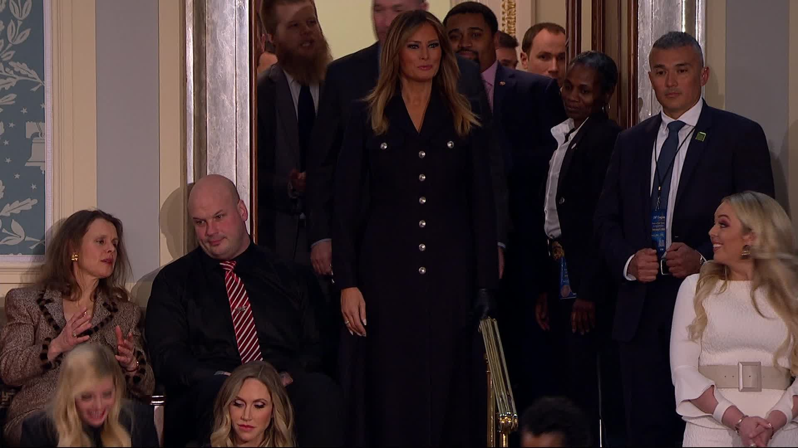

Credit: CNN


President Joe Biden will deliver his first speech to a joint Congress Wednesday. His audience will look much different than the ones his predecessors faced due to the pandemic.

House Speaker Nancy Pelosi sent a letter earlier this month inviting Biden to speak to Congress after previously saying that she was waiting to make a decision on extending an invitation due to concerns over the coronavirus pandemic.
Credit: CNN

Chief Justice John Roberts will be the only Supreme Court justice in attendance at the address, according to spokeswoman Kathleen Arberg.
Credit: Supreme Court

This year's joint address will be invite-only. Invitations were extended to a limited number of lawmakers, according to CNN. It's unclear how many lawmakers per party will attend.
Credit: CNN/Pool

The first lady will not be bringing guests to the address. Former First Lady Melania Trump is seen here in the House chamber where President Trump delivered the State of the Union address in 2019.
Credit: CNN

A total of about 200 people are expected to be allowed in the House chamber Wednesday.
Credit: CNN